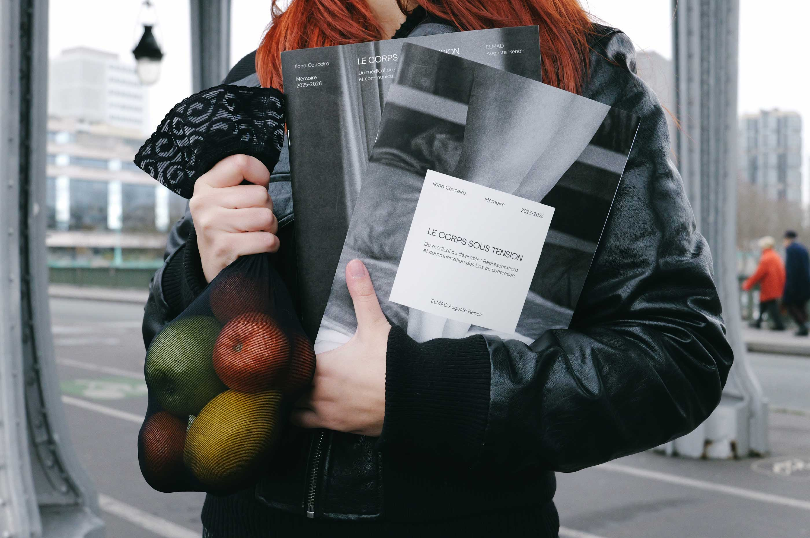
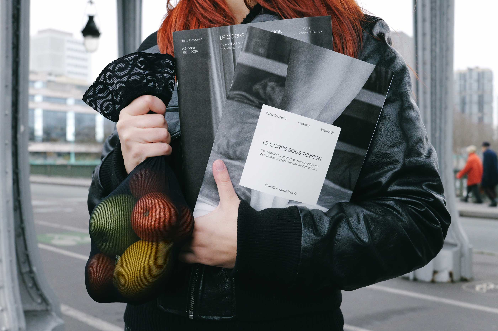

Le corps sous tension est un mémoire qui questionne comment les imaginaires du vieillissement et de la maladie freinent l’adhésion aux bas de contention chez les jeunes adultes. Il explore comment la communication peut rendre ce dispositif médical plus désirable et assumé. Le projet prend la forme d’un objet éditorial inspiré de la mode, pensé pour une lecture claire, interactive et immersive.
 
